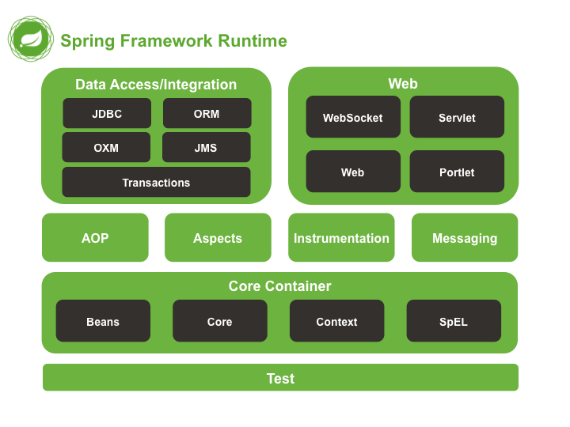

spring模块
Spring框架的功能被有组织的分散到约20个模块中。这些模块分布在核心容器，数据访问/集成，Web，AOP（面向切面的编程），植入(Instrumentation)，消息传输和测试，如下面的图所示。

核心容器
核心容器由以下模块组成，spring-core， spring-beans，spring-context，spring-context-support，和spring-expression （Spring表达式语言）。
spring-core和spring-beans模块提供了框架的基础功能，包括IOC和依赖注入功能。 BeanFactory是一个成熟的工厂模式的实现。你不再需要编程去实现单例模式，允许你把依赖关系的配置和描述从程序逻辑中解耦。
上下文（spring-context）模块建立在由Core和Beans模块提供的坚实的基础上：它提供一个框架式的对象访问方式，类似于一个JNDI注册表。上下文模块从Beans模块继承其功能，并添加支持国际化（使用，例如，资源集合），事件传播，资源负载，并且透明创建上下文，例如，Servlet容器。Context模块还支持Java EE的功能，如EJB，JMX和基本的远程处理。ApplicationContext接口是Context模块的焦点。 spring-context-support支持整合普通第三方库到Spring应用程序上下文，特别是用于高速缓存（ehcache，JCache）和调度（CommonJ，Quartz）的支持。
spring-expression模块提供了强大的表达式语言去支持查询和操作运行时对象图。这是对JSP 2.1规范中规定的统一表达式语言（unified EL）的扩展。该语言支持设置和获取属性值，属性分配，方法调用，访问数组，集合和索引器的内容，逻辑和算术运算，变量命名以及从Spring的IoC容器中以名称检索对象。 它还支持列表投影和选择以及常见的列表聚合。
AOP和Instrumentation
spring-aop模块提供了一个符合AOP联盟（要求）的面向方面的编程实现，例如，允许您定义方法拦截器和切入点（pointcuts），以便干净地解耦应该被分离的功能实现。 使用源级元数据(source-level metadata)功能，您还可以以类似于.NET属性的方式将行为信息合并到代码中。
单独的spring-aspects模块，提供了与AspectJ的集成。
spring-instrument模块提供了类植入(instrumentation)支持和类加载器的实现,可以应用在特定的应用服务器中。该spring-instrument-tomcat 模块包含了支持Tomcat的植入代理。
消息
Spring框架4包括spring-messaging(消息传递模块)，其中包含来自Spring Integration的项目，例如，Message，MessageChannel，MessageHandler，和其他用来传输消息的基础应用。该模块还包括一组用于将消息映射到方法的注释(annotations)，类似于基于Spring MVC注释的编程模型。
数据访问/集成
数据访问/集成层由JDBC，ORM，OXM，JMS和事务模块组成。
spring-jdbc模块提供了一个JDBC –抽象层，消除了需要的繁琐的JDBC编码和数据库厂商特有的错误代码解析。
spring-tx模块支持用于实现特殊接口和所有POJO（普通Java对象）的类的编程和声明式事务 管理。
spring-orm模块为流行的对象关系映射(object-relational mapping )API提供集成层，包括JPA和Hibernate。使用spring-orm模块，您可以将这些O / R映射框架与Spring提供的所有其他功能结合使用，例如前面提到的简单声明性事务管理功能。
spring-oxm模块提供了一个支持对象/ XML映射实现的抽象层，如JAXB，Castor，JiBX和XStream。
spring-jms模块(Java Messaging Service) 包含用于生产和消费消息的功能。自Spring Framework 4.1以来，它提供了与 spring-messaging模块的集成。
Web
Web层由spring-web，spring-webmvc和spring-websocket 模块组成。
spring-web模块提供基本的面向Web的集成功能，例如多部分文件上传功能，以及初始化一个使用了Servlet侦听器和面向Web的应用程序上下文的IoC容器。它还包含一个HTTP客户端和Spring的远程支持的Web相关部分。
spring-webmvc模块（也称为Web-Servlet模块）包含用于Web应用程序的Spring的模型-视图-控制器(MVC)和REST Web Services实现。 Spring的MVC框架提供了领域模型代码和Web表单之间的清晰分离，并与Spring Framework的所有其他功能集成。
测试
spring-test模块支持使用JUnit或TestNG对Spring组件进行单元测试和 集成测试。它提供了Spring ApplicationContexts的一致加载和这些上下文的缓存。它还提供可用于独立测试代码的模仿(mock)对象。
本文节选自spring官方文档，由并发编程网翻译


本文首发于我在万达摆地摊's blog，转载请注明来源